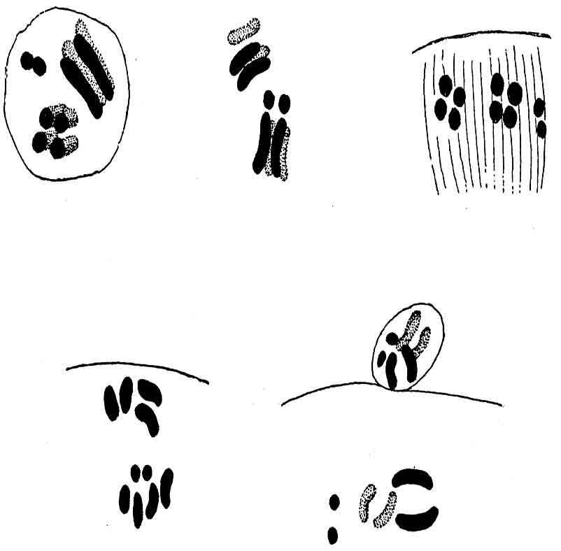
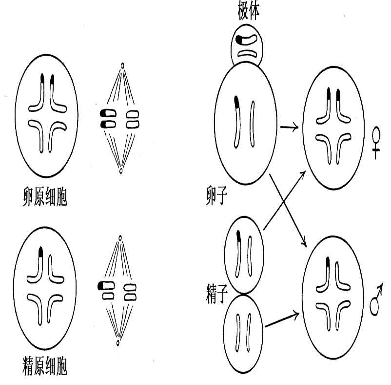

X染色体附着在常染色体上
在少数生物里，看到了性染色体附着在其他染色体上面；这种现象势必把X染色体和Y染色体的不同性质遮掩起来。在这种情况下，性染色体有时分离开来，例如蛔虫（图126）；或者雄性体细胞内的X染色体在染色性质上与其他染色体不同；或者像在Seiler所研究的某种蛾里，胚胎的体细胞内复染色体分散成若干条小染色体，从这种情况里发觉了性染色体的存在。

图126 蛔虫卵子内两条小的X染色体从常染色体里分离出来（仿Geinitz）
性染色体同普通染色体（即常染色体）的附着作用，牵涉到性连锁遗传的批判，特别是当雄性的才有X附着的常染色体，与同对中没有X附着的染色体之间发生交换时，更是这样。现在举一个例子来说明这一点。图127中，蛔虫染色体的黑色一端表示附着在普通染色体上的X染色体。雌虫有两条X染色体，分别附着在同对中的一条常染色体上面。成熟卵子各有一条这样的复染色体（因而也有一条X）。雄虫有一条X，附着在相应的常染色体上，但同对的另一条常染色体上却没有附着X。成熟分裂以后，半数的精细胞有一条X，另一半没有X。显然，这里的性别决定机制，同XX—XO型的机制，是一样的。
在雌虫的两条X之间以及两条附着染色体之间，都可能发生交换。

图127 示X染色体在雌雄两种蛔虫中的分布情况（仿Boveri）
但在XO雄虫方面，情形却有所不同；因为染色体上的X部分没有配偶，所以不能希望该部分发生交换，这样保证了性别分化基因与性别决定机制的一致性，至于复染色体上的两个常染色体部分，其间可能发生交换而不能影响性别机制。由X部分的基因所引起的性状，势必表现性连锁遗传，也就是说，这一类的隐性性状将在子代雄虫中出现。由常染色体部分的基因所引起的隐性性状，在子代雄虫中不会出现，不过这些由常染色体部分上的基因所引起的性状，对于性别以及对于X部分上基因所引起的性状，势必表现出部分的连锁（注：按照McClung的观察，Hesperotettix雄性的X染色体，并不一定附着在同一条染色体上面，虽然在某一个别个体里，X的附着总是恒定的。在其他个体里，X染色体可能是游离的。如果这样的类型有性连锁性状的话，那么，它们的遗传可能由于X染色体和常染色体之间的不恒定关系而复杂起来。）。
在上述假设的例子里，雄性体内这条没有X附着的常染色体（也就是同有X的复染色体成为配偶的那一条）似乎是和普通XX—XY型的Y染色体相当（因为它局限在雄系之内）；不同的，只是这条没有X附着的常染色体上面，有了一些基因，和复X染色体上面相应部分的基因相同。事实上，近来报道过一些遗传例子，那里有某些基因似乎是载在Y染色体上面。由此可知，Y染色体本身有时是可以载有基因的。
这样的提法，如果依照上面的解释，是不会引起异议的，但是如果此外还有其他含义，则显然会引起反对，因为雄性的X和Y之间，如果普遍发生交换，势必使染色体的性别机制遭受破坏。如果真有其事，那么，这两条染色体不久便会彼此雷同，而产生雌性和雄性的那种平衡上的差异也就会随之消失了。